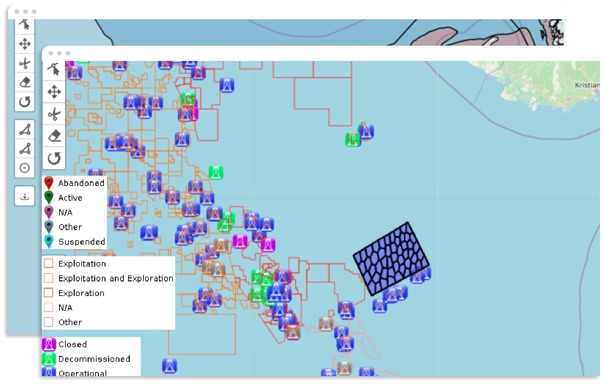
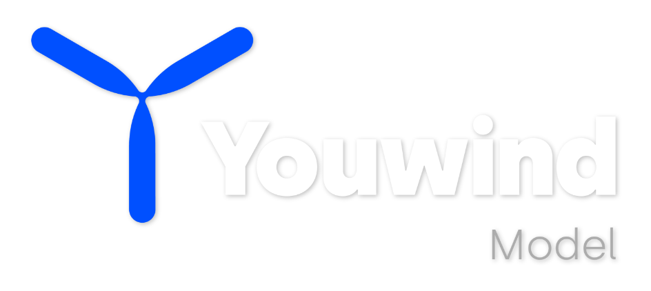
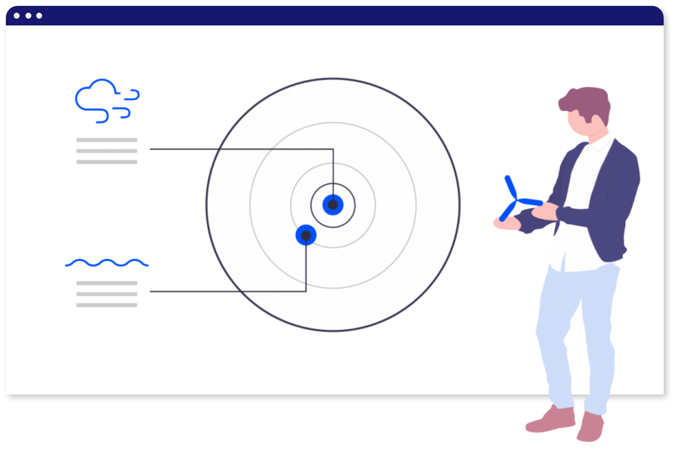
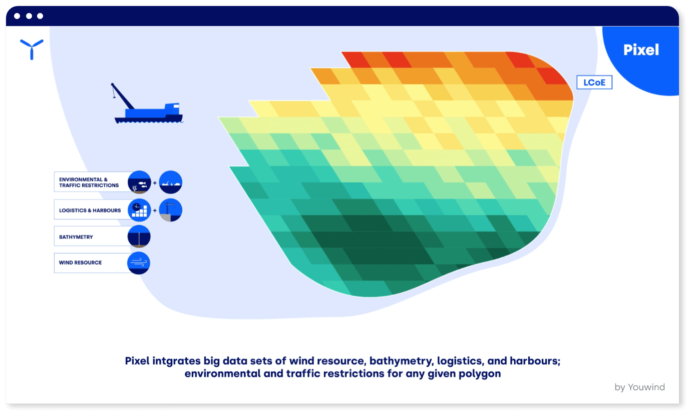
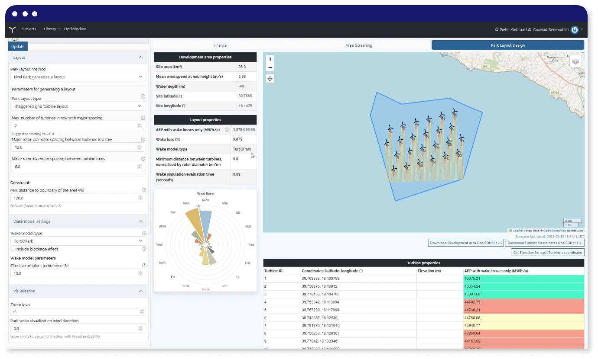
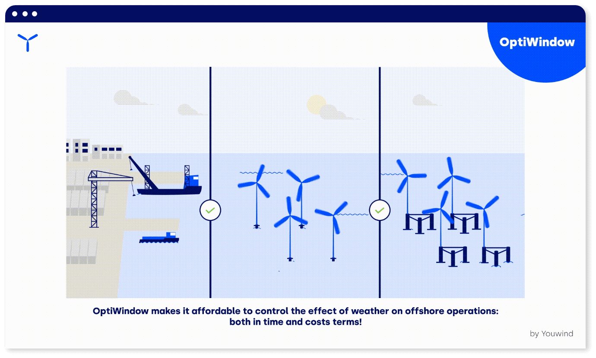

Youwind Model is a disrupting cloud-based IT system that optimizes the financials of an offshore wind farm, while integrating engineering functions with a usability mindset as never imagined before.
Youwind Model performs powerful analytics, handles big data and keeps traceability of al steps and users, resulting in a revolutionary system for the development of an offshore wind farm project, from early stages to installation planning and logistics.


When starting a new offshore wind project, complex multi-criteria challenges arise: Wind Resource, Foundations, Selection (Bottom and Floating), Bathymetry, Cementation types, Turbine types, Ports, Regulation, Yield, and many more.
The constant use of experts and resources are required to best account for the future CAPEX/OPEX and LCOE of the future project. Pixel simplifies that.
When starting a new offshore wind project, complex multi-criteria challenges arise: Wind Resource, Foundations, Selection (Bottom and Floating), Bathymetry, Cementation types, Turbine types, Ports, Regulation, Yield, and many more.
The constant use of experts and resources are required to best account for the future CAPEX/OPEX and LCOE of the future project. Pixel simplifies that.

